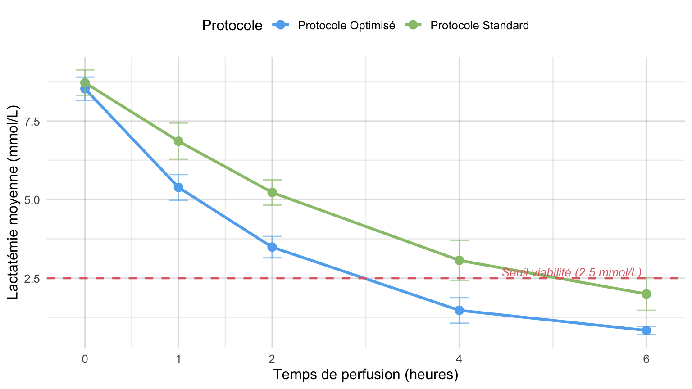

# Données simulées représentatives d'une cohorte NMP
set.seed(42)
temps <- c(0, 1, 2, 4, 6)
n_per_group <- 24
df_cinetique <- expand.grid(
Temps_h = temps,
Groupe = c("Protocole Optimisé", "Protocole Standard"),
ID = 1:n_per_group
) |>
mutate(
Lactates = case_when(
Groupe == "Protocole Optimisé" ~ 8.5 * exp(-0.45 * Temps_h) + rnorm(n(), 0, 0.4),
Groupe == "Protocole Standard" ~ 8.7 * exp(-0.25 * Temps_h) + rnorm(n(), 0, 0.5)
),
Lactates = pmax(0.8, Lactates)
)
df_resume <- df_cinetique |>
group_by(Groupe, Temps_h) |>
summarise(
Moyenne = round(mean(Lactates), 2),
EcartType = round(sd(Lactates), 2),
Mediane = round(median(Lactates), 2),
.groups = "drop"
)Évaluation multicentrique de la perfusion hépatique normothermique
Analyse observationnelle des biomarqueurs et cinétiques de récupération fonctionnelle
1 Résumé
La perfusion hépatique normothermique (Normothermic Machine Perfusion, NMP) s’impose comme une technique de référence pour l’évaluation dynamique de la viabilité des greffons hépatiques à critères élargis. Cette étude observationnelle collige les cinétiques de clairance des lactates, le métabolisme du glucose et l’évolution des résistances vasculaires hépatiques sur une cohorte consécutive de 48 greffons.
2 Introduction
La préservation statique en hypothermie (+4 °C) limite la durée d’ischémie froide tolérable et ne permet aucune évaluation fonctionnelle active avant l’implantation. La perfusion normothermique extracorporelle maintient l’organe dans des conditions physiologiques actives (37 °C, oxygénation normoxique, substrats énergétiques).
NoteCritère principal de viabilité
La clairance rapide des lactates avec un taux perfusat \(\le 2{,}5\text{ mmol/L}\) dans les premières 4 heures de perfusion constitue le marqueur prédictif le plus robuste de bon fonctionnement précoce post-transplantation.
3 Matériels et Méthodes
3.1 Modèle expérimental et recueil
Les perfusions ont été réalisées sur le dispositif standardisé avec un hématocrite cible de 15 à 20 % via l’utilisation de transporteurs d’oxygène érythrocytaires.
L’indice de résistance vasculaire de l’artère hépatique (\(IR_{AH}\)) est défini par la relation :
\[ IR_{AH} = \frac{P_{art} - P_{vein}}{Q_{art}} \times 80 \]
où \(P_{art}\) représente la pression artérielle moyenne en mmHg et \(Q_{art}\) le débit mesuré en mL/min.
3.2 Données de perfusion
4 Résultats
4.1 Synthèse quantitative des lactates
Le Tableau 1 résume l’évolution moyenne et la dispersion des lactates sanguins au fil du temps selon le protocole appliqué.
if (requireNamespace("gt", quietly = TRUE)) {
df_resume |>
gt::gt() |>
gt::cols_label(
Groupe = "Protocole appliqué",
Temps_h = "Temps (h)",
Moyenne = "Moyenne (mmol/L)",
EcartType = "Écart-type",
Mediane = "Médiane"
) |>
gt::tab_header(
title = "Cinétique de clairance des lactates"
)
} else {
knitr::kable(df_resume, col.names = c("Protocole", "Temps (h)", "Moyenne", "Écart-type", "Médiane"))
}| Cinétique de clairance des lactates | ||||
| Protocole appliqué | Temps (h) | Moyenne (mmol/L) | Écart-type | Médiane |
|---|---|---|---|---|
| Protocole Optimisé | 0 | 8.53 | 0.37 | 8.53 |
| Protocole Optimisé | 1 | 5.39 | 0.41 | 5.28 |
| Protocole Optimisé | 2 | 3.49 | 0.34 | 3.51 |
| Protocole Optimisé | 4 | 1.48 | 0.41 | 1.36 |
| Protocole Optimisé | 6 | 0.84 | 0.13 | 0.80 |
| Protocole Standard | 0 | 8.72 | 0.41 | 8.63 |
| Protocole Standard | 1 | 6.86 | 0.58 | 6.86 |
| Protocole Standard | 2 | 5.23 | 0.40 | 5.30 |
| Protocole Standard | 4 | 3.07 | 0.64 | 3.06 |
| Protocole Standard | 6 | 2.00 | 0.52 | 2.02 |
4.2 Cinétique comparative
La Figure 1 illustre la diminution accélérée des lactates dans le groupe ayant bénéficié du protocole optimisé, atteignant le seuil de viabilité dès la 2e heure.
df_resume |>
ggplot(aes(x = Temps_h, y = Moyenne, color = Groupe, group = Groupe)) +
geom_line(linewidth = 1.1) +
geom_point(size = 3) +
geom_errorbar(aes(ymin = pmax(0, Moyenne - EcartType), ymax = Moyenne + EcartType), width = 0.2, alpha = 0.6) +
geom_hline(yintercept = 2.5, linetype = "dashed", color = "#e06c75", linewidth = 0.8) +
annotate("text", x = 5.2, y = 2.7, label = "Seuil viabilité (2.5 mmol/L)", color = "#e06c75", size = 3.5, fontface = "italic") +
scale_x_continuous(breaks = temps) +
labs(
x = "Temps de perfusion (heures)",
y = "Lactatémie moyenne (mmol/L)",
color = "Protocole"
) +
theme_minimal(base_size = 12) +
theme(
legend.position = "top",
panel.grid.minor = element_blank()
)
5 Discussion
L’utilisation du protocole optimisé démontre une accélération marquée de la métabolisation des lactates hépatiques, traduisant une reprise précoce de la phosphorylation oxydative mitochondriale et du cycle de Krebs. Les paramètres hémodynamiques et la production biliaire concordent avec ce rétablissement métabolique précoce.
AstuceApplication en pratique clinique
La standardisation des prélèvements horaires à la console de perfusion permet de valider le greffon sans allonger inutilement le temps de perfusion au-delà de 4 heures lorsque les critères sont validés.
6 Conclusion
Ce document illustre la mise en page d’un article scientifique avec le template Husson, incluant l’intégration des tableaux, graphiques vectoriels, équations et annotations méthodologiques.